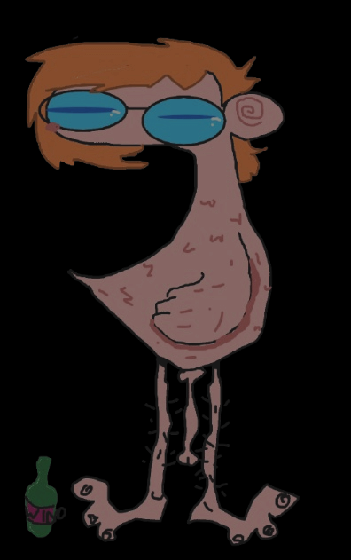

home
music blog?
recomendations
omurice journey
my cat
blinkies
photos
meow
―
□
X

updates
meow
―
□
X
welcome hi!! this is my first attempt at making a site. using social media makes me feel bad lately so i decided switch to something new.
guestbook

 welcome hi!! this is my first attempt at making a site. using social media makes me feel bad lately so i decided switch to something new.
welcome hi!! this is my first attempt at making a site. using social media makes me feel bad lately so i decided switch to something new.